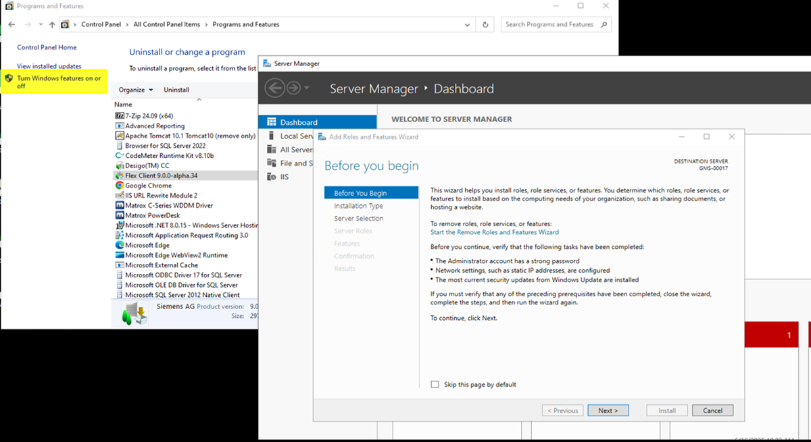
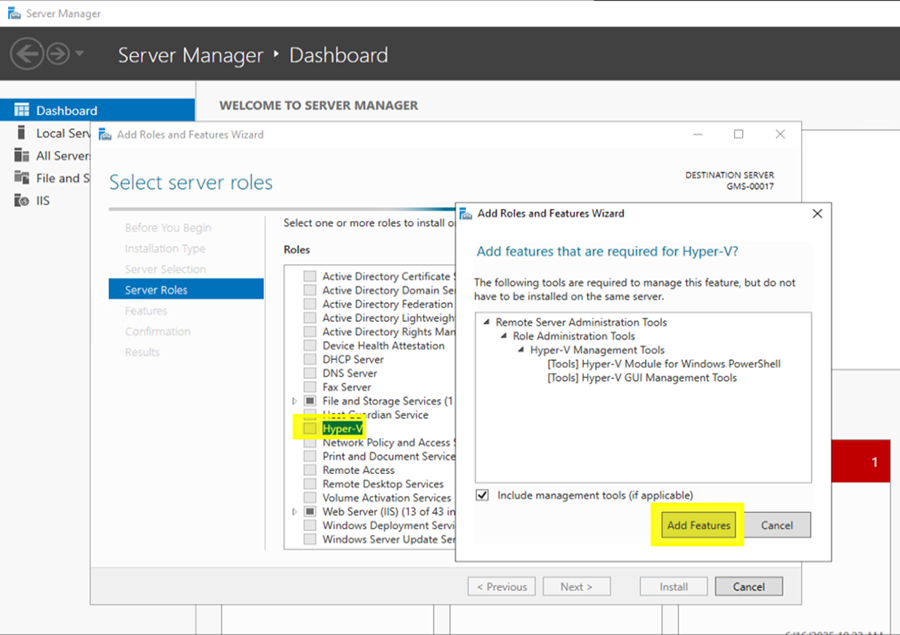
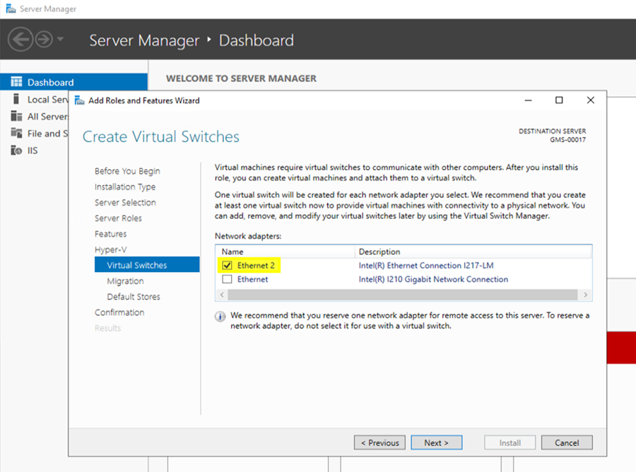
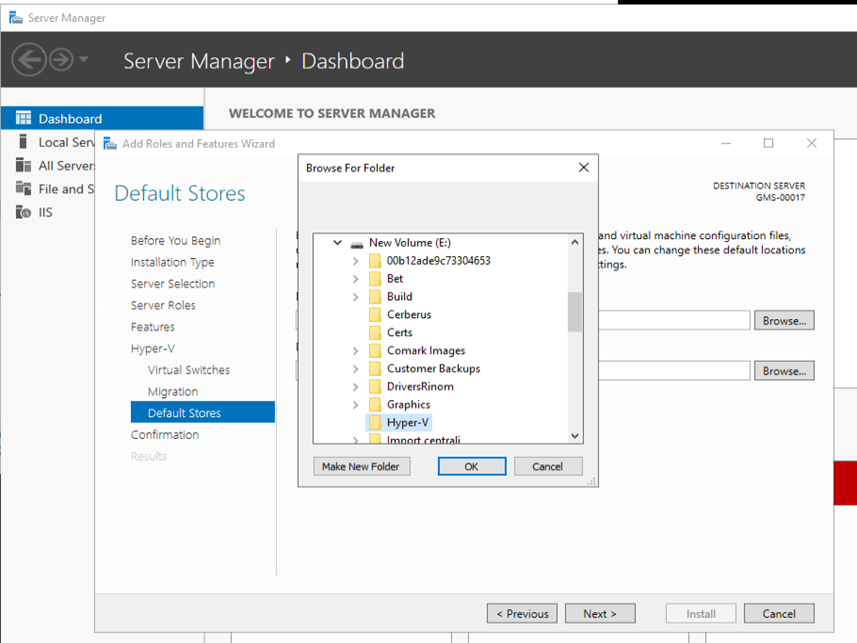

Enable Hyper-V Hypervisor
This section describes the steps to install and enable the Hyper-V role on the server. This action activates the core virtualization platform required to create and manage virtual machines.
- Open Control Panel.
- Under the Programs category, select Uninstall a program.
- In the pane on the left, select Turn Windows features on or off.
- The Add Roles and Features Wizard opens.
- On the Before you begin page, select Next.

- On the Installation Type page, leave default setting and select Next.
- On the Server Selection page, leave default selection and select Next.
- On the Server Role page, select Hyper-V checkbox. In the pop-up window that appears, select Include management tools checkbox, then select Add features.

- On the Virtual Switches page, select the desired network adapter from the list, and then select Next.

- On the Default Store page select the location for storing VMs data (create a new folder), then select Next.
